Mantis Rallyan infinite stage that dreams itself
Tip the Core2 forward to gas, pull back to brake, tilt to steer, hold C for the handbrake. Seventeen biomes, branching roads, drifts that stick. Everything is made live on the device.
Flash to Core2
Chrome or Edge, USB cable. Same web installer as Planet and Seadiver. CI writes the merged image after every build.
or
Download merged .bin
Manual flash: esptool.py --chip esp32 write_flash 0x0 firmware-merged.bin
Drive
Stages
Twelve biomes and the roads between them: pine forest, redwood cathedral, lake country, rain moor, Devil’s Pass, alpine summit, red canyon, coast highway, wildflower meadow, autumn ridge, bayou mud and frost tundra. Weather wanders, the day turns, and every fork names where it leads.
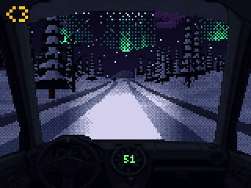
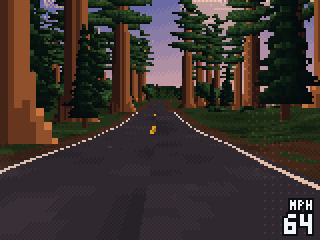
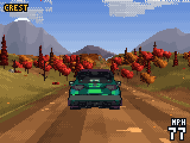
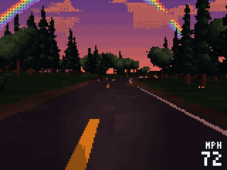
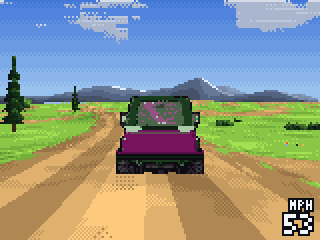
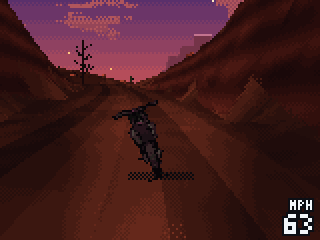
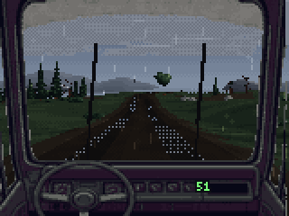
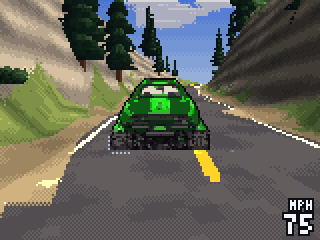
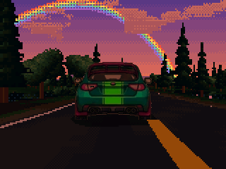
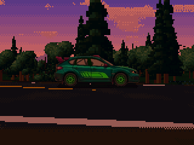
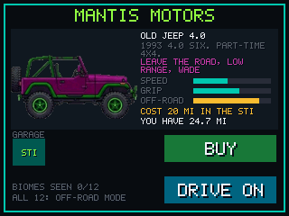